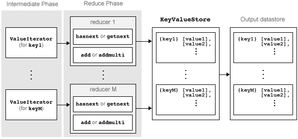

Write a Reduce Function
Role of the Reduce Function in MapReduce
mapreduce requires both an input map function that receives blocks of
data and that outputs intermediate results, and an input reduce function that reads the
intermediate results and produces a final result. Thus, it is normal to break up a
calculation into two related pieces for the map and reduce functions to fulfill separately.
For example, to find the maximum value in a data set, the map function can find the maximum
value in each block of input data, and then the reduce function can find the single maximum
value among all of the intermediate maxima.
This figure shows the Reduce phase of the mapreduce algorithm.

The Reduce phase of the mapreduce algorithm
has the following steps:
The result of the Map phase of the
mapreducealgorithm is an intermediateKeyValueStoreobject that contains all of the key-value pairs added by the map function. Before calling the reduce function,mapreducegroups the values in the intermediateKeyValueStoreobject by unique key. Each unique key in the intermediateKeyValueStoreobject results in a single call to the reduce function.For each key,
mapreducecreates aValueIteratorobject that contains all of the values associated with that key.The reduce function scrolls through the values from the
ValueIteratorobject using thehasnextandgetnextfunctions, which are typically used in awhileloop.After performing a summary calculation, the reduce function adds one or more key-value pairs to the final
KeyValueStoreobject using theaddandaddmultifunctions.
The Reduce phase of the mapreduce algorithm
is complete when the reduce function processes all of the unique intermediate
keys and their associated values. The result of this phase of the mapreduce algorithm
(similar to the Map phase) is a KeyValueStore object
containing all of the final key-value pairs added by the reduce function.
After the Reduce phase, mapreduce pulls the key-value
pairs from the KeyValueStore and returns them in
a datastore (a KeyValueDatastore object by default).
The key-value pairs in the output datastore are not in sorted order;
they appear in the same order as they were added by the reduce function.
Requirements for Reduce Function
mapreduce automatically calls the reduce
function for each unique key in the intermediate KeyValueStore object, so
the reduce function must meet certain basic requirements to run properly
during these automatic calls. These requirements collectively ensure
the proper movement of data through the Reduce phase of the mapreduce algorithm.
The inputs to the reduce function are intermKey, intermValIter,
and outKVStore:
intermKeyis one of the unique keys added by the map function. Each call to the reduce function bymapreducespecifies a new unique key from the keys in the intermediateKeyValueStoreobject.intermValIteris theValueIteratorobject associated with the active key,intermKey. ThisValueIteratorobject contains all of the values associated with the active key. Scroll through the values using thehasnextandgetnextfunctions.outKVStoreis the name for the finalKeyValueStoreobject to which the reduce function needs to add key-value pairs. Theaddandaddmultifunctions use this object name to add key-value pairs to the output.mapreducetakes the output key-value pairs fromoutKVStoreand returns them in the output datastore, which is aKeyValueDatastoreobject by default. If the reduce function does not add any key-value pairs tooutKVStore, thenmapreducereturns an empty datastore.
In addition to these basic requirements for the reduce function, the key-value pairs added by the reduce function must also meet these conditions:
Keys must be numeric scalars, character vectors, or strings. Numeric keys cannot be
NaN, logical, complex, or sparse.All keys added by the reduce function must have the same class, but that class may differ from the class of the keys added by the map function.
If the
OutputTypeargument ofmapreduceis'Binary'(the default), then a value added by the reduce function can be any MATLAB® object, including all valid MATLAB data types.If the
OutputTypeargument ofmapreduceis'TabularText', then a value added by the reduce function can be a numeric scalar, character vector, or string. In this case, the value cannot beNaN, complex, logical, or sparse.
Note
The above key-value pair requirements may differ when using
other products with mapreduce. See the documentation
for the appropriate product to get product-specific key-value pair
requirements.
Sample Reduce Functions
Here are a few illustrative reduce functions used in
mapreduce examples.
Simple Reduce Function
One of the simplest examples of a reducer is
maxArrivalDelayReducer, which is the reducer for the example Find Maximum Value with MapReduce.
The map function in this example finds the maximum arrival delay in each chunk of input
data. Then the reduce function finishes the task by finding the single maximum value among
all of the intermediate maxima. To find the maximum value, the reducer scrolls through the
values in the ValueIterator object and compares each value to the current
maximum. mapreduce only calls this reducer function once, since the
mapper adds a single unique key to the intermediate KeyValueStore object.
The reduce function adds a single key-value pair to the output.
function maxArrivalDelayReducer(intermKey, intermValIter, outKVStore) % intermKey is 'PartialMaxArrivalDelay'. intermValIter is an iterator of % all values that has the key 'PartialMaxArrivalDelay'. maxVal = -Inf; while hasnext(intermValIter) maxVal = max(getnext(intermValIter), maxVal); end % The key-value pair added to outKVStore will become the output of mapreduce add(outKVStore,'MaxArrivalDelay',maxVal); end
Advanced Reduce Function
A more advanced example of a reducer is statsByGroupReducer, which
is the reducer for the example Compute Summary Statistics by Group Using MapReduce. The map function in this example groups the data
in each input using an extra parameter (airline carrier, month, and so on), and then
calculates several statistical quantities for each group of data. The reduce function
finishes the task by retrieving the statistical quantities and concatenating them into
long vectors, and then using the vectors to calculate the final statistical quantities for
count, mean, variance, skewness, and kurtosis. The reducer stores these values as fields
in a structure, so that each unique key has a structure of statistical quantities in the
output.
function statsByGroupReducer(intermKey, intermValIter, outKVStore) % Reducer function for the StatisticsByGroupMapReduceExample. % Copyright 2014 The MathWorks, Inc. n = []; m = []; v = []; s = []; k = []; % get all sets of intermediate statistics while hasnext(intermValIter) value = getnext(intermValIter); n = [n; value(1)]; m = [m; value(2)]; v = [v; value(3)]; s = [s; value(4)]; k = [k; value(5)]; end % Note that this approach assumes the concatenated intermediate values fit % in memory. Refer to the reducer function, covarianceReducer, of the % CovarianceMapReduceExample for an alternative pairwise reduction approach % combine the intermediate results count = sum(n); meanVal = sum(n.*m)/count; d = m - meanVal; variance = (sum(n.*v) + sum(n.*d.^2))/count; skewnessVal = (sum(n.*s) + sum(n.*d.*(3*v + d.^2)))./(count*variance^(1.5)); kurtosisVal = (sum(n.*k) + sum(n.*d.*(4*s + 6.*v.*d +d.^3)))./(count*variance^2); outValue = struct('Count',count, 'Mean',meanVal, 'Variance',variance,... 'Skewness',skewnessVal, 'Kurtosis',kurtosisVal); % add results to the output datastore add(outKVStore,intermKey,outValue);
See Also
mapreduce | tabularTextDatastore | add | addmulti | hasnext | getnext | KeyValueStore | ValueIterator